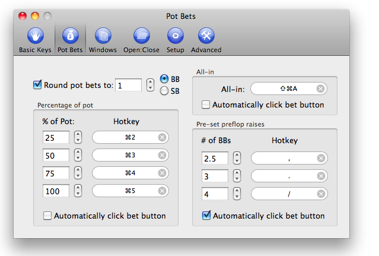

Defining pot bets.
BlazingStars allows you to define hotkeys to bet a specified percentage of the current potsize when the hotkey is pressed. for instance, if you set the first pot-bet percentage to 100%, the hotkey will enter the current pot size into the bet box. You can also ask BlazingStars to automatically click the "Bet" button, as well as define a key to do an all-in bet. BlazingStars will also round the bet to the nearest multiple of the small or big blinds as you ask it to.
